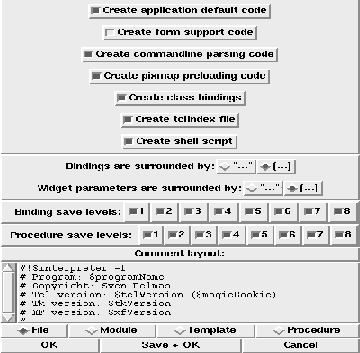
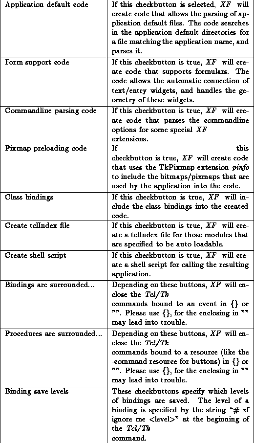

This dialog box provides access to the version control facilities that XF uses. It is possible to store and retrieve procedures and modules to/from ShapeTools archives. The commands need some parameters which are provided by XF as Tcl variables. The variable xfFileName contains the name of the object to be processed. The variable xfFileVersion contains the version number of the object to be processed. The variable xfMessage contains the message to attach to an object when it is saved.

Figure: The procedure XFProcOptionsVersion
The single options have the following meanings (some option names may be abbreviated):
Option name & Purpose
